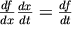
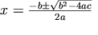
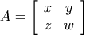
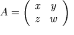
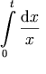

Descrizione sommaria: Linguaggio di
marcatura matematica (MathML) Versione 2.0
Precedente: 1 Introduzione
Successivo: 3 Marcatura di presentazione
2 Fondamenti del MathML
2.1 Descrizione sommaria del
MathML
2.1.1 Tassonomia
degli elementi del MathML
2.1.2 Marcatura di
presentazione
2.1.3 Marcatura di
contenuto
2.1.4 Mescolare
presentazione e contenuto
2.2 Alcuni esempi di
MathML
2.2.1 Esempi di
presentazione
2.2.2 Esempi di
contenuto
2.2.3 Esempi di
marcatura mista
2.3 Sintassi e grammatica del
MathML
2.3.1 Sintassi e
grammatica del MathML
2.3.2 Una
breve introduzione della sintassi dell'XML
2.3.3 Figli
rispetto ad argomenti
2.3.4 Valori
degli attributi del MathML
2.3.5 Attributi condivisi da tutti gli
elementi del MathML
2.3.6 Collassare gli spazi bianchi in
entrata
Questo capitolo presenta le idee fondamentali del MathML. La prima sezione descrive il progetto globale del MathML. La seconda sezione presenta una serie di esempi per le motivazioni, per dare al lettore qualcosa di concreto a cui fare riferimento leggendo i capitoli successivi delle specifiche del MathML. L'ultima sezione descrive le caratteristiche fondamentali della sintassi e della grammatica del MathML, che si applicano a tutta la marcatura MathML. In particolare, la Sezione 2.3 [Sintassi e grammatica del MathML] dovrebbe essere letta prima del Capitolo 3 [Marcatura di presentazione], del Capitolo 4 [Marcatura di contenuto] e del Capitolo 5 [Combinare marcatura di presentazione e di contenuto].
Una sfida fondamentale nella definizione di un linguaggio di marcatura per la matematica in rete è riconciliare il bisogno di codificare sia la presentazione di una notazione matematica che il contenuto dell'idea matematica o dell'oggetto che essa rappresenta.
La relazione tra una notazione matematica e un'idea matematica è sottile e profonda. A livello formale, il risultato della logica matematica fa sorgere sconvolgenti domande sulla corrispondenza tra i sistemi di logica simbolica e i fenomeni per cui essi sono modelli. Ad un livello più intuitivo, chiunque usi la notazione matematica conosce la differenza che può fare una buona scelta della notazione; la struttura simbolica della notazione suggerisce la struttura logica. Per esempio, la notazione di Leibnitz per le derivate `suggerisce' la regola a catena dell'analisi matematica tramite la cancellazione simbolica delle frazioni: .
I matematici e gli insegnanti lo comprendono intuitivamente molto bene; parte della loro esperienza sta nello scegliere la notazione che enfatizzi gli aspetti chiave di un problema nascondendo o portando in secondo piano gli aspetti estranei. E' diffuso nella matematica e nella scienza scrivere una cosa quando a livello strettamente tecnico si intende qualcos'altro, perché una lunga esperienza dimostra che questo in realtà a livelli più alti comunica meglio l'idea dei dettagli rigorosi.
In molte altre occasioni, tuttavia, la notazione matematica è usata per codificare il senso pieno e preciso di un oggetto matematico. La notazione matematica è capace di una rigorosità prodigiosa, e se usata attentamente può essere virtualmente libera da ambiguità. Inoltre, è esattamente questa mancanza di ambiguità che rende possibile descrivere oggetti matematici in modo che essi possano essere usati da applicazioni di software come sistemi di computer algebra e riproduttori vocali. In situazioni dove una tale comunicazione tra applicazioni è di importanza fondamentale, le sfumature della presentazione visuale assumono generalmente un ruolo minimo.
Il MathML permette agli autori di codificare sia la notazione che rappresenta un oggetto matematico che la struttura dell'oggetto stesso. Inoltre, gli autori possono mescolare entrambi i tipi di codifica per specificare sia la presentazione che il contenuto di un'idea matematica. Il resto di questa sezione dà una descrizione sommaria di come può essere usato il MathML in ciascuno di questi modi.
Tutti gli elementi del MathML cadono in una di tre categorie: elementi di presentazione, elementi di contenuto ed elementi di interfaccia. Ciascuna di queste categorie è descritta nei dettagli rispettivamente nel Capitolo 3 [Marcatura di presentazione], nel Capitolo 4 [Marcatura di contenuto] e nel Capitolo 7 [L'interfaccia del MathML].
Gli elementi di presentazione descrivono la struttura
bidimensionale orientata visivamente della notazione
matematica. Esempi tipici sono l'elemento mrow, che
è generalmente impiegato per indicare una riga orizzontale di
pezzi di espressioni, e l'elemento msup, che è
usato per marcare un'espressione come base ed aggiungerle un
apice. Come regola generale, ogni elemento di presentazione
corrisponde ad un singolo tipo di `???' come cifre, lettere o altri
simboli.
Sebbene questo esempio particolare coinvolga la notazione matematica, e quindi la marcatura di presentazione, la stessa osservazione sulla decomposizione si applica altrettanto bene agli oggetti matematici astratti, e quindi alla marcatura di contenuto. Per esempio, nel contesto della marcatura di contenuto il nostro esempio dell'apice sarebbe tipicamente denotato da un'operazione di elevamento a potenza che richiederebbe due operandi: una `base' e un `esponente'. Non è una coincidenza, poiché come regola generale la disposizione della notazione matematica segue strettamente la struttura logica degli oggetti matematici sottostanti.
La natura ricorsiva degli oggetti e della notazione matematica si riflette fortemente nella marcatura MathML. Nella pratica, quasi tutti gli elementi di presentazione o di contenuto contengono altri elementi MathML che corrispondono ai pezzi costituenti con i quali è costruito ricorsivamente l'oggetto originario. Lo schema originario è detto comunemente lo schema padre, e i pezzi costituenti sono detti schemi figli. Più generalmente, le espressioni MathML possono essere viste come alberi, dove ogni nodo corrisponde ad un elemento MathML, i rami sotto un nodo `padre' corrispondono ai suoi `figli' e le foglie nell'albero corrispondono ad unità atomiche di notazione o di contenuto come numeri, caratteri, ecc.
La maggior parte dei nodi foglia in un albero di espressione MathML
sono o elementi canonicamente vuoti senza corpo o elementi
token. Gli elementi canonicamente vuoti rappresentano direttamente
i simboli nel MathML, per esempio, questo vale per l'elemento di
contenuto <plus/>. Gli elementi token del MathML
sono i soli elementi del MathML che possono contenere dati di
caratteri MathML. I dati di caratteri MathML possono consistere di
caratteri Unicode e di elementi MathML
<mchar/>. Questi elementi
<mchar/>, come <mchar
name="alpha" /> e <mchar
name="rightarrow" />, denotano tipicamente
caratteri Unicode non nel codice ASCII e l'attributo name
contiene l'informazione di quale simbolo speciale si rappresenta. La
costruzione <mchar/> sostituisce l'uso di
entità MathML speciali come α per
codificare simboli speciali specificato nel MathML 1 per
compatibilità con i meccanismi generici dell'XML. Un terzo tipo
di nodo foglia permesso nel MathML è l'elemento
annotation, che è usato per contenere dati che non
sono in formato MathML.
Gli elementi token di presentazione più importanti sono
mi, mn e mo per rappresentare
rispettivamente identificatori, numeri e operatori. Tipicamente un
riproduttore impiegherà stili tipografici leggermente diversi
per ciascuno di questi tipi di dati: i numeri sono normalmente in
caratteri diritti, gli identificatori in corsivo, e gli operatori
hanno più spazio intorno ad essi. Nella marcatura di contenuto,
ci sono solo tre elementi token, ci, cn e
csymbol, rispettivamente per identificatori, numeri e
nuovi simboli introdotti nel documento stesso. Nella marcatura di
contenuto sono forniti elementi separati per funzioni ed operatori
comunemente usati. E' fornito l'elemento fn per
estensioni definite dall'utente all'insieme fondamentale.
In termini di marcatura, la maggior parte degli elementi MathML
sono denotati da un'etichetta iniziale e da un'etichetta
finale, che contengono la marcatura per il loro contenuto. Nel
caso degli elementi token, il contenuto sono dati di caratteri, e
nella maggior parte degli altri casi, il contenuto è la
marcatura per gli elementi figli. Una terza categoria di elementi,
detti elementi canonicamente vuoti, non richiedono contenuto, e sono
denotati da una singola etichetta della forma
<nome/>. Un esempio di questo tipo di marcatura
è <plus/> nella marcatura di contenuto.
Tornando all'esempio di (a + b)2, possiamo ora vedere come i principi discussi in precedenza abbiano applicazione pratica. Una forma di marcatura di presentazione per quest'esempio è:
<msup>
<mfenced>
<mrow>
<mi>a</mi>
<mo>+</mo>
<mi>b</mi>
</mrow>
</mfenced>
<mn>2</mn>
</msup>
Questo esempio dimostra vari elementi di presentazione. Il primo
elemento, uno che è usato molto, è
mrow. Questo elemento si usa per denotare una riga di
materiale allineato orizzontalmente. Il materiale contenuto tra i tag
<mrow> e </mrow> è
considerato un argomento dell'elemento
mrow. Perciò l'intera espressione qui è
contenuta in un elemento mrow. Come notato in precedenza,
quasi tutte le espressioni matematiche si decompongono in
sottoespressioni. Anche queste sottoespressioni possono, a loro volta,
essere contenute in un elemento mrow. Per esempio, a+b
è a sua volta contenuta in un elemento mrow.
L'elemento mfenced è usato per mettere
parentesi (graffe, quadre e tonde) intorno a formule. Il suo
comportamento predefinito è usare parentesi tonde.
Si noti l'uso dell'elemento mi per visualizzare le
variabili a e b e dell'elemento mo per marcare
l'operatore +.
L'elemento msup è per espressioni che
coinvolgono gli apici e richiede due argomenti, nell'ordine,
l'espressione base (qui, (a+b)) e l'espressione
esponente (qui, 2).
La marcatura di contenuto per lo stesso esempio è:
<apply>
<power/>
<apply>
<plus/>
<ci>a</ci>
<ci>b</ci>
</apply>
<cn>2</cn>
</apply>
Qui, l'elemento di contenuto apply significa applicare
un'operazione ad un'espressione. In questo esempio, sono
applicati sia l'elemento power (per l'elevamento a
potenza), che non richiede un corpo, che l'elemento simile
plus (per l'addizione). Si osservi che entrambi gli
operatori richiedono due argomenti, con l'ordine che è
particolarmente significativo nel caso dell'elevamento a potenza.
Si noti l'uso dell'elemento ci per denotare le
variabili a e b, e dell'elemento cn per denotare il
numero 2.
La marcatura di presentazione del MathML consiste di circa 30
elementi che accettano oltre 50 attributi. La maggior parte degli
elementi corrispondono a schemi di disposizione, che contengono
altri elementi di presentazione. Ogni schema di disposizione
corrisponde ad un dispositivo notazionale bidimensionale, come un
pedice o un apice, una frazione o una tabella. Inoltre, ci sono gli
elementi token di presentazione mi, mn e
mo presentati in precedenza, come pure vari altri
elementi token usati meno comunemente. I pochi restanti elementi di
presentazione sono elementi vuoti, e sono usati per lo più in
congiunzione con l'allineamento.
Gli schemi di disposizione cadono in diverse classi. Un gruppo di
elementi riguarda gli apici e i pedici, e contiene elementi come
msub, munder e
mmultiscripts. Un altro gruppo si concentra su una
disposizione più generale e comprende mrow,
mstyle e mfrac. Un terzo gruppo tratta le
tabelle. L'elemento maction è in una categoria da
solo, e permette la codifica di vari tipi di azioni sulla notazione,
come occorrere in un'espressione che commuta tra due notazioni.
Una caratteristica importante di molti schemi di disposizione
è che l'ordine degli schemi figli è significativo. Per
esempio, il primo figlio di un elemento mfrac è il
numeratore e il secondo figlio è il denominatore. Poiché
l'ordine degli schemi figli non è imposto a livello XML dalla
DTD del MathML, l'informazione aggiunta dall'ordinamento è
disponibile solo ad un elaboratore MathML, rispetto ad un generico
elaboratore XML. Quando vogliamo enfatizzare che un elemento MathML
come mfrac richiede i figli in un ordine preciso, ci
riferiremo ad essi come argomenti, e penseremo all'elemento
mfrac come ad un `costruttore' notazionale.
La marcatura di contenuto consiste di circa 100 elementi che
accettano circa una dozzina di attributi. La maggioranza di questi
elementi sono elementi vuoti che corrispondono ad un'ampia
varietà di operatori, relazioni e funzioni con un nome. Esempi
di questo tipo comprendono partialdiff, leq
e tan. Altri come matrix e set
sono usati per codificare vari tipi di dati matematici, e una terza,
importante categoria di elementi di contenuto come apply
si usa per applicare operazioni ad espressioni e anche per creare
nuovi oggetti matematici partendo da altri.
L'elemento apply è forse l'elemento di
contenuto più importante. E' usato per applicare una funzione o
un'operazione ad una collezione di argomenti. Le posizioni degli
schemi figli sono anche qui significative, con il primo figlio che
denota la funzione da applicare, e gli altri figli che denotano gli
argomenti della funzione in ordine. Si noti che il costrutto
apply usa sempre la notazione prefissa, come il
linguaggio programmativo LISP. In particolare, anche operazioni
binarie come la sottrazione sono marcate applicando un operatore di
sottrazione prefisso a due argomenti. Per esempio, a - b
sarebbe marcato come
<apply> <minus/> <ci>a</ci> <ci>b</ci> </apply>
Alcune funzioni e operazioni richiedono uno o più
quantificatori per essere ben definite. Per esempio, oltre ad un
integrando, un integrale definito deve specificare i limiti di
integrazione e la variabile legata. Per questa ragione, ci sono vari
schemi qualificatori come bvar e
lowlimit. Sono usati con operatori come diff
e int.
Il costrutto declare è particolarmente
importante per la marcatura di contenuto che potrebbe essere valutata
da un sistema di computer algebra. L'elemento declare
fornisce un meccanismo fondamentale di assegnamento, dove una
variabile può essere dichiarata di un certo tipo, con un certo
valore.
Diversi tipi di marcatura saranno più adatti per diversi tipi di compiti. I documenti scritti prima che il web diventasse importante erano più spesso intesi solo per la comunicazione visiva delle informazioni, così questi dati sono probabilmente tradotti meglio in marcatura di presentazione pura, poiché le informazioni semantiche su cosa intendeva l'autore possono solo essere intuite euristicamente. Per contrasto, alcune applicazioni matematiche e strumenti di creazione orientati pedagogicamente sceglieranno probabilmente di essere basati interamente sul contenuto. La maggioranza delle applicazioni cade in un punto tra questi estremi. Per queste applicazioni, la marcatura più appropriata è un misto di marcatura di presentazione e di contenuto.
Le regole per mescolare la marcatura di presentazione e di contenuto derivano dal principio generale che il contenuto misto deve essere permesso solo in luoghi dove esso ha senso. Per la marcatura di contenuto incorporata nella marcatura di presentazione questo significa fondamentalmente che ogni frammento di contenuto deve essere semanticamente significativo, e non deve richiedere che siano specificati interamente quantificatori o argomenti aggiuntivi. Per la marcatura di presentazione incorporata nella marcatura di contenuto, questo di solito significa che la marcatura di presentazione deve essere contenuta in un elemento token di contenuto, in modo che possa essere trattata come un'unità notazionale indivisibile usata come nome di funzione o di variabile.
Un'altra opzione è usare un elemento
semantics. L'elemento semantics è
usato per associare espressioni MathML a vari tipi di annotazioni. Un
uso comune per l'elemento semantics è associare un
pezzo di marcatura di contenuto a della marcatura di presentazione
come annotazione semantica. In questo modo, un autore può
specificare una notazione non standard da usare quando si visualizza
una particolare espressione di contenuto. Un altro uso dell'elemento
semantics è associare qualche altro tipo di
specificazione semantica, come un'espressione in OpenMath, ad
un'espressione MathML. In questo modo, l'elemento
semantics può essere usato per estendere l'ambito
della marcatura di contenuto del MathML.
Notazione: x2 + 4x + 4 = 0.
Marcatura:
<mrow>
<mrow>
<msup>
<mi>x</mi>
<mn>2</mn>
</msup>
<mo>+</mo>
<mrow>
<mn>4</mn>
<mo>⁢</mo>
<mi>x</mi>
</mrow>
<mo>+</mo>
<mn>4</mn>
</mrow>
<mo>=</mo>
<mn>0</mn>
</mrow>
Gli elementi mfrac e msqrt sono usati per generare rispettivamente frazioni e radici quadrate.
Si noti l'uso degli elementi mrow annidati per
denotare termini, ad esempio, il lato sinistro dell'equazione valido
come operando di `='. Marcare i termini facilita molto la spaziatura
per la riproduzione visuale, la presentazione vocale e le interruzioni
di linea. L'entità di carattere MathML
InvisibleTimes è usata qui per indicare che ci
sono regole speciali di spaziatura tra il 4 e la x, e che il 4 e la x
non devono essere spezzati su linee separate. Infatti, l'uso di
un'entità è ora esplicitamente disapprovato in favore dell'uso
di <mchar name="InvisibleTimes" /> ma
è stato introdotto nel MathML 1.0. Negli esempi seguenti
sarà usata la nuova versione, che è stata menzionata in
precedenza e che è discussa esplicitamente nella Sezione 4.4.1 [Elementi
token].
Notazione: .
Marcatura:
<mrow>
<mi>x</mi>
<mo>=</mo>
<mfrac>
<mrow>
<mrow>
<mo>-</mo>
<mi>b</mi>
</mrow>
<mo><mchar name="PlusMinus"/></mo>
<msqrt>
<mrow>
<msup>
<mi>b</mi>
<mn>2</mn>
</msup>
<mo>-</mo>
<mrow>
<mn>4</mn>
<mo><mchar name="InvisibleTimes"/></mo>
<mi>a</mi>
<mo><mchar name="InvisibleTimes"/></mo>
<mi>c</mi>
</mrow>
</mrow>
</msqrt>
</mrow>
<mrow>
<mn>2</mn>
<mo><mchar name="InvisibleTimes"/></mo>
<mi>a</mi>
</mrow>
</mfrac>
</mrow>
Si noti che il segno `più o meno' è dato da un elemento
speciale usato per il nome di simbolo specifico <mchar
name="PlusMinus" />. Poi è usato lo stesso
costrutto con <mchar name="InvisibleTimes"
/>, invece della vecchia forma nell'esempio precedente. Il
MathML fornisce un elenco molto ampio di nomi di caratteri per i
simboli matematici. In aggiunta ai simboli matematici necessari per la
presentazione su schermo o stampata, il MathML fornisce simboli per
facilitare la riproduzione acustica. Per riproduttori acustici,
è importante poter determinare automaticamente se
<mrow>
<mi>z</mi>
<mfenced>
<mrow>
<mi>x</mi>
<mo>+</mo>
<mi>y</mi>
</mrow>
</mfenced>
</mrow>
deve essere letto come `z per la quantità x
più y' o `z di x più y'. Gli
elementi di marcatura <mchar name="InvisibleTimes"
/> e <mchar name="ApplyFunction"
/> forniscono agli autori un modo per codificare
direttamente la distinzione per i riproduttori audio. Per esempio, nel
primo caso si dovrebbe inserire <mchar
name="InvisibleTimes" /> dopo la linea che
contiene la z. Il MathML introduce anche entità come
<mchar name="dd" /> che rappresenta una
`d differenziale' che si riproduce con una spaziatura leggermente
diversa nella stampa, e può essere presentata come `d' o
`rispetto a' parlando. A meno che non si usino i tag di contenuto, o
qualche altro meccanismo, per eliminare l'ambiguità, gli autori
dovrebbero usare sempre queste entità, per rendere i loro
documenti più accessibili.
Notazione: .
Marcatura:
<mrow>
<mi>A</mi>
<mo>=</mo>
<mfenced open="[" close="]">
<mtable>
<mtr>
<mtd><mi>x</mi></mtd>
<mtd><mi>y</mi></mtd>
</mtr>
<mtr>
<mtd><mi>z</mi></mtd>
<mtd><mi>w</mi></mtd>
</mtr>
</mtable>
</mfenced>
</mrow>
La maggior parte degli elementi ha attributi che controllano i
dettagli delle loro riproduzioni su schermo e su stampa. Per esempio,
ci sono vari attributi per l'elemento mfenced che
controllano che parentesi devono essere usate all'inizio e alla fine
dell'espressione raggruppata in precedenza. Gli attributi per elementi
operatori dati usando <mo> sono impostati a valori
predefiniti determinati da un dizionario. Per il dizionario degli
operatori MathML consigliato, si veda l'Appendice D [Dizionario degli
operatori].
Notazione: x2 + 4x + 4 = 0.
Marcatura:
<apply>
<eq/>
<apply>
<plus/>
<apply>
<power/>
<ci>x</ci>
<cn>2</cn>
</apply>
<apply>
<times/>
<cn>4</cn>
<ci>x</ci>
</apply>
<cn>4</cn>
</apply>
<cn>0</cn>
</apply>
Si noti che l'elemento apply si usa per relazioni,
operatori e funzioni.
Notazione: .
Marcatura:
<apply>
<eq/>
<ci>x</ci>
<apply>
<divide/>
<apply>
<fn><mo><mchar name='PlusMinus'/></mo></fn>
<apply>
<minus/>
<ci>b</ci>
</apply>
<apply>
<root/>
<apply>
<minus/>
<apply>
<power/>
<ci>b</ci>
<cn>2</cn>
</apply>
<apply>
<times/>
<cn>4</cn>
<ci>a</ci>
<ci>c</ci>
</apply>
</apply>
<cn>2</cn>
</apply>
</apply>
<apply>
<times/>
<cn>2</cn>
<ci>a</ci>
</apply>
</apply>
</apply>
La marcatura di contenuto del MathML non contiene direttamente un
elemento per l'operazione `più o meno'. Perciò, usiamo
l'elemento fn per dichiarare che vogliamo che la
marcatura di presentazione per questo operatore agisca come un
operatore di contenuto. Questo è un esempio semplice di come si
possono mescolare marcatura di presentazione e di contenuto per
estendere la marcatura di contenuto.
Notazione: .
Marcatura:
<apply>
<eq/>
<ci>A</ci>
<matrix>
<matrixrow>
<ci>x</ci>
<ci>y</ci>
</matrixrow>
<matrixrow>
<ci>z</ci>
<ci>w</ci>
</matrixrow>
</matrix>
</apply>
Si noti che, di default, la riproduzione dell'elemento di contenuto
matrix comprende le parentesi, perciò non abbiamo
bisogno di codificarle direttamente. Questo è piuttosto diverso
dall'elemento di presentazione mtable che può
riferirsi o meno ad una matrice, e quindi richiede la codifica
esplicita delle parentesi se esse sono desiderate.
Notazione: .
Marcatura:
<semantics>
<mrow>
<msubsup>
<mo><mchar name='int'/></mo>
<mn>0</mn>
<mi>t</mi>
</msubsup>
<mfrac>
<mrow>
<mo><mchar name='dd'/></mo>
<mi>x</mi>
</mrow>
<mi>x</mi>
</mfrac>
</mrow>
<annotation-xml encoding="MathML-Content">
<apply>
<int/>
<bvar><ci>x</ci></bvar>
<lowlimit><cn>0</cn></lowlimit>
<uplimit><ci>t</ci></uplimit>
<apply>
<divide/>
<cn>1</cn>
<ci>x</ci>
</apply>
</apply>
</annotation-xml>
</semantics>
In questo esempio, usiamo l'elemento semantics per
fornire un'espressione di contenuto MathML che serve come `annotazione
semantica' per un'espressione di presentazione. L'elemento
semantics ha come primo figlio l'espressione annotata, e
i figli successivi sono le annotazioni. Non ci sono restrizioni sul
tipo di annotazioni che possono essere allegate usando l'elemento
semantics. Per esempio, si può dare una codifica
TEX, o dati in ingresso per computer algebra in
un'annotazione. Il tipo di annotazione è specificata
dall'attributo encoding e dagli elementi
annotation e annotation-xml.
Un altro uso comune dell'elemento semantics nasce
quando si vuole usare una codifica di contenuto, e fornire un
suggerimento per la sua presentazione. In un caso simile, applicata
alla formula precedente avremmo la marcatura:
<semantics>
<apply>
<int/>
<bvar><ci>x</ci></bvar>
<lowlimit><cn>0</cn></lowlimit>
<uplimit><ci>t</ci></uplimit>
<apply>
<divide/>
<cn>1</cn>
<ci>x</ci>
</apply>
</apply>
<annotation-xml encoding="MathML-Presentation">
<mrow>
<msubsup>
<mo><mchar name='int'/></mo>
<mn>0</mn>
<mi>t</mi>
</msubsup>
<mfrac>
<mrow>
<mo><mchar name='dd'/></mo>
<mi>x</mi>
</mrow>
<mi>x</mi>
</mfrac>
</mrow>
</annotation-xml>
</semantics>
Questo tipo di annotazione è utile quando si desidera qualcosa di diverso dalla presentazione predefinita della codifica del contenuto. Per esempio, di default, alcuni riproduttori potrebbero disporre l'integrando come `(1/x)dx'. Specificare che l'integrando dovrebbe essere presentato invece preferibilmente come `dx/x' può essere fatto con l'uso di un'annotazione di Presentazione MathML come mostrato. Si tenga presente, comunque, che i riproduttori non hanno l'obbligo di tenere conto delle informazioni contenute nelle annotazioni, e l'uso che ne sarà fatto, se esse saranno usate, dipenderà dal riproduttore.
Il MathML è un'applicazione dell'XML, o Linguaggio di Marcatura Estensibile [Bray1998], e come tale la sua sintassi è governata dalle regole della sintassi dell'XML, e la sua grammatica è specificata in parte da una DTD, o Definizione di Tipo di un Documento. In altre parole, i dettagli sull'uso dei tag, degli attributi, dei riferimenti alle entità e così via sono definiti nelle specifiche del linguaggio XML, e i dettagli sugli elementi e sui nomi degli attributi del MathML, quali elementi possono essere annidati in quali altri, e così via sono specificati nella DTD del MathML. Questo è nell'Appendice A [Analisi del MathML].
Il W3C, cercando di aumentare la flessibilità dell'uso dell'XML per il Web, e di incoraggiare la modularizzazione di applicazioni costruite con l'XML, ha scoperto che la forma fondamentale di una DTD non è l'ideale. Perciò è stato creato un Gruppo di Lavoro W3C per sviluppare delle specifiche per gli Schemi XML [XMLSchemas], che sono documenti di specifica che eventualmente sostituiranno le DTD. Il MathML 2.0 è stato progettato in modo cosciente perché la matematica possa avvantaggiarsi delle ultime tecnologie del Web. Perciò deve esserci uno Schema per il MathML. Per maggiori informazioni su uno Schema MathML si veda l'Appendice A [Analisi del MathML] e la pagina principale del MathML ().
Comunque, il MathML specifica inoltre alcune regole di sintassi e di grammatica in aggiunta alle regole generali che eredita come applicazione XML. Queste regole permettono al MathML di codificare molte più informazioni di quanto sarebbe possibile normalmente con l'XML puro, senza introdurre molti più elementi, e usando una DTD o uno schema sostanzialmente più complesso. Nell'Appendice B [Grammatica di convalida della marcatura di contenuto] è data una grammatica per le espressioni della marcatura di contenuto. Ovviamente, uno svantaggio dell'uso di regole specifiche del MathML è che sono invisibili agli elaboratori e ai convalidatori XML generici.
Ci sono fondamentalmente due tipi di regole di grammatica e di sintassi del MathML aggiuntive. Un tipo coinvolge come porre criteri aggiuntivi sui valori degli attributi. Per esempio, non è possibile in XML puro richiedere che il valore di un attributo sia un intero positivo. Il secondo tipo di regola specifica restrizioni più dettagliate sugli elementi figli (per esempio sull'ordinamento) di quelle date nella DTD o anche in uno schema. Per esempio, non è possibile in XML specificare che il primo figlio debba essere interpretato in un modo, e il secondo in un altro.
Le seguenti sezioni discutono caratteristiche della sintassi e della grammatica sia dell'XML in generale che del MathML in particolare. Nel resto delle specifiche del MathML, faremo normalmente attenzione a distinguere tra l'uso richiesto dalla sintassi dell'XML e dalla DTD (e dallo schema) del MathML e l'uso richiesto da regole specifiche del MathML. Comunque, alluderemo spesso a `errori MathML' senza identificare quale parte delle specifiche è stata violata.
Poiché il MathML è un'applicazione dell'XML, le
specifiche del MathML usano la terminologia dell'XML per
descriverlo. Brevemente, i dati XML sono composti da caratteri Unicode
(che comprendono i normali caratteri ASCII), `riferimenti ad
entità' (chiamati in modo informale `entità') come
< che rappresentano di solito `caratteri estesi',
ed `elementi' come <mi fontstyle="normal"> x
</mi>.
Molto spesso un elemento contiene altri dati XML detti il suo
`contenuto', o `corpo', tra un `tag iniziale' (a volte detto `tag di
apertura') e un `tag finale', come nell'HTML. Ci sono anche `elementi
vuoti' come <plus/>, il cui tag iniziale finisce
con /> per indicare che l'elemento non ha contenuto o
tag finale. Il tag iniziale può contenere parametri con nomi
detti `attributi', come fontstyle="normal"
nell'esempio precedente. Per maggiori dettagli sull'XML, si consultino
le specifiche dell'XML [Bray1998].
Poiché l'XML fa differenza tra maiuscole e minuscole, lo stesso vale per i nomi di elementi e di attributi del MathML. Per ragioni di leggibilità, il MathML li definisce quasi tutti in minuscolo.
Nelle discussioni formali sulla marcatura XML si mantiene una
distinzione tra un elemento, come un elemento mrow, e i
tag <mrow> e </mrow> che lo
marcano. Ciò che si trova fra il tag iniziale
<mrow> e il tag finale </mrow>
è il contenuto o corpo dell'elemento mrow. Un
`elemento vuoto' come none per definizione non ha un
corpo e perciò ha un solo tag della forma
<none/>. Di solito, la distinzione tra elementi e
tag non sarà tracciata così nettamente in queste
specifiche. Per esempio, a volte faremo riferimento agli elementi
<mrow> e <none/>, intendendo in
realtà gli elementi i cui tag sono questi, perché i
riferimenti agli elementi siano visivamente distinguibili dai
riferimenti agli attributi. Comunque, le parole `elemento' e `tag'
saranno usate in stretto accordo con la terminologia XML.
Molti elementi MathML richiedono un numero specifico di elementi figli o aggiungono significati aggiuntivi ai figli in certe posizioni. Come notato in precedenza, richieste di questo tipo sono specifiche del MathML, e non possono essere date interamente usando la sintassi e la grammatica XML. Quando i figli di un dato elemento MathML sono soggetti a questo tipo di condizioni aggiuntive, spesso faremo riferimento ad essi come argomenti invece che semplicemente come figli in ordine di enfatizzare il loro utilizzo specifico del MathML. Si noti che specialmente nel Capitolo 3 [Marcatura di presentazione] il termine `argomento' si usa di solito in questo senso tecnico, a meno che non sia specificato altrimenti, e perciò si riferisce ad un elemento figlio.
Nelle discussioni dettagliate della sintassi degli elementi data con ogni elemento nelle specifiche del MathML, il numero di argomenti necessari e il loro ordine è indicato implicitamente dando nomi per gli argomenti alle varie posizioni. Queste informazioni sono date anche per gli elementi di presentazione nella tabella degli argomenti necessari nella Sezione 3.1.3 [Argomenti necessari], e per gli elementi di contenuto nell'Appendice B [Grammatica di convalida della marcatura di contenuto].
Pochi elementi hanno altri requisiti sul numero o sul tipo degli argomenti. Questi requisiti aggiuntivi sono descritti insieme con i singoli elementi.
Secondo le specifiche del linguaggio XML, gli attributi dati agli elementi devono avere una delle forme
nome-attributo = "valore"
oppure
nome-attributo = 'valore'
dove gli spazi bianchi intorno al simbolo '=' sono opzionali.
I nomi degli attributi sono mostrati generalmente in un carattere
a grandezza fissa all'interno di testo descrittivo in
queste specifiche, come pure è usato il carattere a
grandezza fissa per gli esempi.
Il valore di un attributo, che in generale nel MathML può
essere una stringa di caratteri arbitrari, deve essere circondato da
una coppia o di doppi apici (") o di apici singoli
('). Il tipo di carattere non usato per circondare il
valore può farne parte.
Il MathML usa una sintassi più complicata per valori di attributi rispetto alla sintassi XML generica richiesta dalla DTD del MathML. Queste regole aggiuntive sono intese per l'uso da parte di applicazioni MathML, ed è un errore MathML violarle, anche se non possono essere imposte dall'elaborazione XML. La sintassi MathML di ogni valore di attributo è specificata nella tabella degli attributi fornita con la descrizione di ogni elemento, usando una notazione descritta in seguito. Nelle applicazioni MathML questi valori di attributi dovrebbero essere elaborati ulteriormente come segue, a meno che non sia specificato altrimenti: gli spazi bianchi devono essere ignorati tranne che per separare sequenze di lettere e cifre in parole o numeri; e i riferimenti numerici Unicode (elencati nel Capitolo 6 [Caratteri, entità e font]) che possono essere usati all'interno di elementi token per rappresentare caratteri possono essere usati per rappresentare quei caratteri nei valori degli attributi (quando quei caratteri sarebbero permessi dalla sintassi del valore dell'attributo). Si noti che l'uso dei riferimenti ad entità per la maggior parte dei simboli è ora disapprovato nel MathML 2. Perciò l'uso di un riferimento numerico a carattere Unicode è migliore, se la codifica di ingresso non permette di usarlo direttamente.
In particolare, i caratteri ", ',
& e < possono essere inclusi nei
valori degli attributi MathML (quando permesso dalla sintassi del
valore dell'attributo) usando rispettivamente i riferimenti ad
entità ", ',
& e <.
La DTD del MathML fornita nell'Appendice A [Analisi del MathML]
dichiara la maggior parte dei tipi di valori degli attributi come
stringhe CDATA. Questo permette una maggiore
interoperabilità con il software SGML e XML esistente e
permette l'estensione degli elenchi dei valori predefiniti. Simili
considerazioni valgono con gli schemi.
Per descrivere la sintassi specifica del MathML dei valori permessi per gli attributi, si usano le seguenti convenzioni e notazioni per la maggior parte degli attributi nel presente documento.
| Notazione | A cosa corrisponde |
| numero | numero decimale intero o razionale (una stringa di cifre con un punto decimale), che inizia opzionalmente con '-' |
| numero-senza-segno | numero decimale intero o reale, senza segno |
| intero | intero decimale, che inizia opzionalmente con '-' |
| intero-positivo | numero decimale, senza segno, non 0 |
| stringa | stringa arbitraria (sempre l'intero valore dell'attributo) |
| carattere | singolo carattere non di spaziatura, o riferimento a entità MathML; gli spazi bianchi di separazione sono opzionali |
| #rrggbb | colore in formato RGB; le tre coppie di cifre esadecimali nell'esempio #5599dd definiscono proporzioni di rosso, verde e blu su una scala da x00 a xFF, che dà un blu cielo intenso. |
| h-unità | unità di lunghezza orizzontale (le unità permesse sono elencate in seguito) |
| v-unità | unità di lunghezza verticale (le unità permesse sono elencate in seguito) |
| famiglia-di-font-css | spiegato nella sottosezione CSS, in seguito |
| nome-di-colore-css | spiegato nella sottosezione CSS, in seguito |
| altre parole in corsivo | spiegate nel testo per ogni attributo |
| forma + | una o più istanze di 'forma' |
| forma * | zero o più istanze di 'forma' |
| f1 f2 ... fn | un'istanza di ciascuna forma, in sequenza, opzionalmente separate da spazi bianchi |
| f1 | f2 | ... | fn | una qualunque delle forme specificate |
| [ forma ] | un'istanza opzionale di 'forma' |
| ( forma ) | lo stesso che forma |
| parola in testo normale | quella parola, presente letteralmente nel valore dell'attributo (a meno che non faccia ovviamente parte di una frase di spiegazioni) |
| simbolo tra apici | quel simbolo, presente letteralmente nel valore dell'attributo (es. "+" or '+') |
L'ordine di precedenza degli operatori per la notazione della sintassi è, dalla precedenza maggiore a quella minore:
Una stringa può contenere caratteri arbitrari
specificabili all'interno dei valori degli attributi
CDATA nell'XML; deve usare riferimenti alle entità
per certi caratteri, come descritto in precedenza. Può
contenere riferimenti a caratteri o a entità in formato XML per
ciascuno dei caratteri elencati nel Capitolo 6 [Caratteri, entità e
font]. Nessuna regola di sintassi nel MathML comprende una
stringa come solo una parte del valore di un attributo, solo
come l'intero valore.
Un carattere è un singolo carattere Unicode che non
sia uno spazio bianco, o un riferimento ad entità carattere, o
un'espressione che usa l'elemento mchar e dà il
nome di un carattere. Esempi di quest'ultima forma sono dati dalle
centinaia nel Capitolo 6 [Caratteri,
entità e font].
Come semplice esempio, i valori permessi per gli attributi booleani
sono specificati come true | false, che significa che
l'intero valore dell'attributo deve essere o true o
false.
Parole chiave e numeri adiacenti devono essere separati da uno
spazio bianco nel valore reale dell'attributo, tranne per gli
identificatori di unità (denotati dai simboli sintattici
h-unità o v-unità) che seguono
i numeri. Gli spazi bianchi non sono altrimenti necessari, ma sono
permessi tra due qualunque dei token elencati in precedenza, tranne
(per compatibilità con i CSS1) immediatamente prima degli
identificatori di unità, tra il segno '-' e le cifre dei numeri
negativi, o tra # e rrggbb o
rgb.
Valori numerici di attributi per le dimensioni che devono dipendere
dal font attuale possono essere dati in unità relative ai font,
o in unità assolute con un nome (descritte in una sottosezione
separata). Le dimensioni orizzontali sono date per convenzione in
em, e le dimensioni verticali in ex, facendo
seguire immediatamente un numero da uno degli identificatori di
unità em o ex. Per esempio, lo spazio
orizzontale intorno ad un operatore come `+' è dato per
convenzione in em, anche se potrebbero essere usate altre
unità. Usare unità relative ai font è
generalmente preferibile all'uso di unità assolute,
poiché permette alle riproduzioni di aumentare o diminuire in
dimensione proporzionalmente alla dimensione attuale del font.
Per la maggior parte degli attributi numerici, solo quelli in un sottoinsieme dei valori esprimibili hanno senso; valori all'esterno di questo sottoinsieme non sono errori, a meno che non sia specificato diversamente, ma piuttosto sono arrotondati verso l'alto o verso il basso (a discrezione del riproduttore) al valore più vicino all'interno del sottoinsieme permesso. L'insieme dei valori permessi può dipendere dal riproduttore, e non è specificato dal MathML.
Se è dichiarato che un valore numerico all'interno della
descrizione della sintassi del valore di un attributo permette un
segno meno ('-'), es. numero o intero, non
è un errore di sintassi che ce ne sia uno in casi dove un
valore negativo non ha senso. Invece, il valore dovrebbe essere
gestito dall'applicazione che elabora il documento come descritto nel
paragrafo precedente. Un segno più esplicito ('+') non è
permesso come parte di un valore numerico tranne quando è
specificatamente elencato nella sintassi (come un '+' o "+"
tra apici) e la sua presenza può modificare il significato del
valore dell'attributo (come documentato con ogni attributo che lo
permette).
I simboli h-unità, v-unità,
famiglia-di-font-css e nome-di-colore-css
sono spiegati nelle seguenti sottosezioni.
Alcuni attributi accettano lunghezze orizzontali o verticali come
numeri seguiti da un `identificatore di unità' (spesso chiamato
soltanto `unità'). I simboli di sintassi
h-unità e v-unità si
riferiscono rispettivamente ad un'unità per la lunghezza
orizzontale o verticale. Le unità possibili e le lunghezze a
cui si riferiscono sono mostrate nella tabella seguente; sono le
stesse per lunghezze orizzontali e verticali, ma i simboli di sintassi
sono distinti nella sintassi degli attributi per tenere presente la
direzione nella quale sono usati.
Gli identificatori di unità e i loro significati sono presi dal CSS1. Comunque, la sintassi dei numeri seguiti da identificatori di unità nel MathML non è identica alla sintassi dei valori di lunghezza con unità nei fogli di stile CSS, poiché i numeri nel CSS non possono finire con virgole decimali, e possono iniziare con segni '+'.
Le unità orizzontali o verticali possibili nel MathML sono:
| Identificatore di unità | Descrizione di unità |
| em | em (unità relativa ai font tradizionalmente usata per lunghezze orizzontali) |
| ex | ex (unità relativa ai font tradizionalmente usata per lunghezze verticali) |
| px | pixel, o dimensione in pixel del display attaule |
| in | pollici (1 pollice = 2.54 centimetri) |
| cm | centimetri |
| mm | millimetri |
| pt | punti (1 punto = 1/72 di pollice) |
| pc | pica (1 pica = 12 punti) |
| % | percentuale del valore predefinito |
Le unità tipografiche em e ex sono
definite nell'Appendice F
[Glossario], e discusse ulteriormente sotto `Note aggiuntive' in
seguito.
% è un'unità `relativa'; quando un
valore di un attributo è dato come n% (per ogni
valore numerico n), il valore specificato è il
valore predefinito della proprietà che si intende controllare
moltiplicato per n diviso 100. Il valore predefinito (o
il modo nel quale esso è ottenuto, se non è costante)
è elencato nella tabella degli attributi per ogni elemento, e
il suo significato è descritto nella successiva documentazione
dell'attributo. (L'elemento mpadded ha la sua sintassi
per % e non lo permette come identificatore di
unità.)
Per consistenza con i CSS, le unità di lunghezza nel MathML
sono raramente opzionali. Quando lo sono, il simbolo di unità
è racchiuso tra parentesi quadre nella sintassi dell'attributo,
dopo il numero al quale si applica, es. numero [ h-unità
]. Il significato di non specificare nessuna unità
è dato nella documentazione di ogni attributo; in generale
è che il numero dato è un moltiplicatore per il valore
predefinito dell'attributo. (In questi casi, specificare il numero
nnn senza un'unità è equivalente a
specificare il numero nnn per 100 seguito da
%. Per esempio, <mo maxsize="2"> (
</mo> è equivalente a <mo
maxsize="200%"> ( </mo>.)
Come eccezione speciale (anch'essa consistente con i CSS), non è necessario che un valore numerico uguale a 0 sia seguito da un identificatore di unità anche se la sintassi qui specificata ne richiede uno. In tali casi, l'identificatore di unità (o la sua mancanza) non importerebbe, poiché 0 per ogni unità fa 0.
Per la maggior parte degli attributi è scelta l'unità
tipica che sarebbe usata per descriverli nell'impaginazione come
quella usata nel valore predefinito di quell'attributo in queste
specifiche; quando non è dato un valore predefinito specifico,
l'unità tipica è di solito menzionata nella tabella
della sintassi o nella documentazione per quell'attributo. Le
unità più comuni sono em o
ex. Comunque, può essere usata qualunque
unità, a meno che non sia specificato diversamente per un dato
attributo.
Si noti che alcuni attributi, es. framespacing in un
elemento <mtable>, possono contenere più di
un valore numerico, ciascuno seguito dalla sua unità.
E' convenzione usare l'unità relativa ai font
ex principalmente per lunghezze verticali, e
em principalmente per lunghezze orizzontali, ma non
è necessario. Queste unità sono relative al font e alla
dimensione del font usata per riprodurre l'elemento nel cui valore di
attributo sono specificate, il che significa che devono essere
interpretate dopo che sono elaborati attributi come
fontfamily e fontsize, se ce ne sono sullo
stesso elemento, poiché modificare il font corrente o la sua
dimensione può alterare la lunghezza di una di queste
unità.
La definizione della lunghezza di ogni unità (ma non la
sintassi MathML per i valori di lunghezza) è quella specificata
nei CSS1, tranne che se un font fornisce valori specifici per
em e ex diversi dai valori definiti dai CSS1
(rispettivamente la dimensione del font e l'altezza `x'), devono
essere usati questi valori.
Vari attributi del MathML, elencati in seguito, corrispondono strettamente alle proprietà di presentazione testuale definite dai Fogli di Stile a Cascata, Livello 1 (CSS1).
I nomi e i valori accettabili di questi attributi sono stati allineati con le direttive CSS1 dove possibile. In generale, la sintassi MathML per ogni attributo intende essere un sottoinsieme della sintassi CSS per la proprietà corrispondente. Differenze di dettagli, dove esistono, sono spiegate con la documentazione di ogni attributo, nelle sezioni di queste specifiche elencate nella tabella precedente.
La sintassi di certi attributi è parzialmente specificata,
nelle tabelle della sintassi degli attributi in queste specifiche,
usando uno dei simboli famiglia-di-font-css o
nome-di-colore-css, come mostrato nella seguente
tabella. Questi simboli si riferiscono a sintassi di altre Direttive
W3C, e sono spiegati nelle sezioni di queste specifiche a cui si fa
riferimento nella tabella.
| Attributo MathML | Proprietà CSS | simbolo di sintassi | Elementi MathML | si riferisce a |
| fontsize | font-size | - | token di presentazione; mstyle |
|
| fontweight | font-weight | - | token di presentazione; mstyle |
|
| fontstyle | font-style | - | token di presentazione; mstyle |
|
| fontfamily | font-family | famiglia-di-font-css | token di presentazione; mstyle |
|
| color | color | nome-di-colore-css | token di presentazione; mstyle |
|
| background | background | nome-di-colore-css | mstyle |
Si veda inoltre la Sezione 2.3.5 [Attributi
condivisi da tutti gli elementi del MathML] in seguito per una
discussione degli attributi class, style e
id per l'uso con i fogli di stile.
I CSS o fogli di stile analoghi possono specificare modifiche alle
proprietà di riproduzione degli elementi MathML selezionati; la
selezione di tali elementi può avvenire in vari modi. Sia le
proprietà elencate in precedenza che altri attributi di
riproduzione del MathML o proprietà supportate da un meccanismo
di fogli di stile possono essere influenzate, in principio, per ogni
elemento. Poiché le proprietà di riproduzione possono
anche essere modificate da attributi su un elemento o automaticamente
è necessario specificare l'ordine nel quale sono applicate le
modifiche da varie fonti. Un esempio di aggiustamento automatico
è ciò che succede per fontsize, come
spiegato nella discussione su scriptlevel nella Sezione 3.3.4 [Modifiche allo
stile (mstyle)]. Nel caso di modifiche `assolute',
ovvero impostare un nuovo valore della proprietà indipendente
dal vecchio valore (opposte alle modifiche `relative', come incrementi
o moltiplicazioni per un fattore), la modifica assoluta effettuata per
ultima sarà l'unica modifica assoluta efficace, così le
fonti di modifiche che dovrebbero avere la priorità più
alta devono essere elaborate per ultime.
Nel caso dei CSS1, l'ordine di elaborazione delle modifiche da varie fonti che influenzano le proprietà di riproduzione di un elemento MathML deve essere il seguente:
(prime modifiche; priorità minore)
fontsize in
relazione a scriptlevel menzionate in precedenza; tali
modifiche saranno di solito implementate dall'elemento padre stesso
prima che passi un insieme di proprietà di riproduzione a
quest'elemento (ultime modifiche; priorità maggiore)
Si noti che l'ordine delle modifiche derivate dai fogli di stile CSS è specificato dai CSS stessi. La seguente spiegazione logica è legata solo al problema di dove in quest'ordine preesistente devono essere inserite le modifiche causate dall'impostazione esplicita di attributi MathML.
Spiegazione logica: gli attributi di riproduzione del MathML sono
analoghi agli attributi di riproduzione dell'HTML come
align, che secondo la sezione dei CSS1 sull'ordine di
cascata devono essere elaborati con la stessa
priorità. Inoltre, questa scelta di priorità permette ai
lettori, dichiarando certi stili CSS `important', di decidere quali
delle loro preferenze di stile devono sovrascrivere l'impostazione
esplicita degli attributi nel MathML. Poiché le espressioni
MathML, sia composte di elementi di `presentazione' che di
`contenuto', sono intese principalmente per trasferire significato,
con il loro `aspetto grafico' (se presente) inteso principalmente per
aiutare a questo fine ma non per essere essenziale, è probabile
che i lettori spesso vorranno che le loro preferenze di stile abbiano
la priorità; l'eccezione principale sarà quando un
attributo di riproduzione è inteso per alterare il significato
contenuto in un'espressione, cosa che è generalmente
scoraggiata negli attributi di presentazione del MathML.
I valori predefiniti degli attributi MathML sono dati in generale insieme alla descrizione degli elementi specifici nel testo. I valori predefiniti mostrati in testo normale nelle tabelle degli attributi per un elemento sono valori letterali (a meno che non siano ovviamente frasi esplicative), ma quando sono in corsivo sono la descrizione di come possono essere calcolati i valori predefiniti.
I valori predefiniti descritti come ereditati sono presi
dall'ambiente di riproduzione, come descritto sotto
mstyle, o in alcuni casi (descritti individualmente) dai
valori di altri attributi di elementi circostanti, o da certe parti di
quei valori. Il valore usato sarà sempre uno che potrebbe
essere stato specificato espressamente, se fosse noto; non
dipenderà mai dal contenuto o dagli attributi dello stesso
elemento, solo dal suo ambiente. (Ciò che significa quando
viene usato può, comunque, dipendere da questi attributi o dal
contenuto.)
I valori predefiniti descritti come automatici devono essere calcolati da un riproduttore MathML in un modo che produca una presentazione di alta qualità; come fare questo non è generalmente specificato dalle specifiche del MathML. Il valore calcolato sarà sempre uno che potrebbe essere stato specificato espressamente, se fosse noto, ma dipenderà di solito dal contenuto dell'elemento e probabilmente dall'ambiente di riproduzione.
Altre descrizioni in corsivo di valori predefiniti che appaiono nelle tabelle degli attributi sono spiegate singolarmente per ogni attributo.
Gli apici semplici o doppi necessari attorno ai valori di attributi in un tag di apertura XML non sono mostrate nelle tabelle della sintassi dei valori degli attributi per ogni elemento, ma sono mostrate attorno ai valori degli attributi degli esempi nel testo.
Si noti che, in generale, non c'è un valore che possa essere
dato esplicitamente per un attributo MathML che simuli l'effetto di
non specificare affatto l'attributo per gli attributi ereditati
o automatici. Dare espressamente le parole `ereditato' o
`automatico' non funzionerà, e non è generalmente
permesso. Inoltre, anche per gli attributi di presentazione per i
quali è documentato qui un valore predefinito specifico,
può essere usato l'elemento mstyle (Sezione 3.3.4 [Modifiche allo
stile (mstyle)]) per cambiarlo per gli elementi che
esso contiene. Perciò, la DTD del MathML dichiara la maggior
parte dei valori predefiniti degli attributi di presentazione come
#IMPLIED (impliciti), cosa che impedisce ai
preelaboratori XML di aggiungere loro uno specifico valore
predefinito. Questo punto di vista è portato attraverso lo
schema del MathML.
In una DTD XML, i valori degli attributi permessi possono essere dichiarati come stringhe generiche, o possono essere vincolati in vari modi, sia enumerando i possibili valori, sia dichiarandoli di certi tipi di dati speciali. La scelta di un tipo di attributo XML influenza l'estensione nella quale possono essere eseguiti controlli di validità usando una DTD.
La DTD del MathML specifica i tipi formali di attributi XML per
tutti gli attributi MathML, comprese le enumerazioni di valori
legittimi in alcuni casi. In generale, comunque, la DTD del MathML
è relativamente permissiva, dichiarando spesso i valori degli
attributi come stringhe; questo è fatto per ragioni di
interoperabilità con analizzatori SGML permettendo che
attributi multipli di un elemento MathML accettino gli stessi valori
(come true e false), e anche per permettere
estensioni agli elenchi dei valori predefiniti.
Allo stesso tempo, anche se un valore di attributo può essere dichiarato come una stringa nella DTD, solo certi valori sono legittimi nel MathML, come descritto in precedenza e nel resto di queste specifiche. Per esempio, molti attributi si aspettano valori numerici. Nella sezione che segue sono descritti i valori permessi per gli attributi di ciascun elemento. Per determinare quando questi vincoli sono realmente imposti nella DTD del MathML, si consulti l'Appendice A [Analisi del MathML]. Comunque, la mancanza di imposizione di un requisito nella DTD non implica che il requisito stesso non faccia parte del linguaggio MathML, o che non sarà imposto da un particolare riproduttore MathML. (Si veda la Sezione 7.2.2 [Gestione degli errori] per una descrizione di come i riproduttori MathML dovrebbero reagire agli errori MathML.)
Inoltre, è fornita per comodità la DTD del MathML; anche se essa intende essere pienamente compatibile con il testo delle specifiche, il testo dovrebbe essere considerato definitivo se c'è una contraddizione. (Ogni contraddizione che può esistere tra vari capitoli del testo dovrebbe essere risolta a favore del Capitolo 6 [Caratteri, entità e font] in primo luogo, poi del Capitolo 3 [Marcatura di presentazione], del Capitolo 4 [Marcatura di contenuto], poi della Sezione 2.3 [Sintassi e grammatica del MathML], e poi di altre parti del testo.) Per lo Schema del MathML la situazione sarà la stessa: il testo delle Direttive pubblicate avrà la precedenza. Sebbene questo sia ciò che dovrebbe succedere, c'è una difficoltà pratica. Se il sistema che elabora il MathML usa un analizzatore di convalida, sia esso basato su una DTD o su uno Schema, il processo si limiterà probabilmente ad arrestarsi quando incontrerà qualcosa che è sintassi incorretta, sia che un'ulteriore elaborazione MathML in piena armonia con le specifiche riesca ad elaborare il pezzo nel modo corretto o meno.
Per agevolare la compatibilità con i Fogli di Stile a
Cascata, Livello 1 (CSS1), tutti gli elementi del MathML
accettano gli attributi class, style e
id oltre agli attributi descritti specificamente per ogni
elemento. I riproduttori MathML che non supportano i CSS possono
ignorare questi attributi. Il MathML specifica i valori di questi
attributi come stringhe generiche, anche se i meccanismi di fogli di
stile hanno una sintassi più restrittiva per essi. Ovvero, ogni
valore per essi è valido nel MathML.
I riproduttori che supportano i CSS (o analoghi meccanismi di fogli di stile) possono usare questi attributi per determinare meglio quali elementi MathML devono essere soggetti a quali modifiche indotte dai fogli di stile alle varie proprietà di riproduzione. Le proprietà che possono essere influenzate, e come queste modifiche le influenzano, sono discusse nella Sezione 2.3.4.3 [Attributi compatibili con i CSS] in precedenza.
Ogni elemento MathML, a causa di un'eredità dal MathML 1.0,
accetta inoltre l'attributo disapprovato other
(Sezione 7.2.3
[Attributi per dati non specificati]) che era stato concepito per
passare attributi non standard senza violare la DTD del MathML. Ai
riproduttori MathML è richiesto di elaborare questo attributo
solo se reagiscono ad attributi non standard nel MathML. Comunque,
l'uso di other è altamente disapprovato quando ci
sono già altri modi nel MathML per passare informazioni
specifiche.
Si veda inoltre la Sezione 3.2.1 [Attributi comuni agli elementi token] per un elenco di attributi MathML che possono essere usati sulla maggior parte degli elementi token di presentazione.
Il MathML ignora gli spazi bianchi che occorrono fuori dagli elementi token. I caratteri che non sono spazi bianchi non sono permessi qui. Gli spazi bianchi che occorrono nel contenuto degli elementi token sono `eleminati' dalle estremità, ovvero ogni spazio bianco all'inizio e alla fine del contenuto è rimosso. Gli spazi bianchi interni al contenuto degli elementi MathML sono `collassati' in modo canonico, ovvero ogni sequenza di 1 o più caratteri di spazio bianco è sostituita con un carattere di spaziatura (o carattere di spazio).
Nel MathML, come nell'XML, `spazi bianchi' vuol dire semplici
spazi, caratteri di tabulazione, fine linea o ritorno del carrello,
ovvero i caratteri con codici Unicode esadecimali rispettivamente
U+0020, Uè0009, U+000a o
U+000d.
Per esempio, <mo> ( </mo> è
equivalente a <mo>(</mo>, e
<mtext> Teorema 1: </mtext>
è equivalente a <mtext>Teorema
1:</mtext>.
Gli autori che desiderano codificare caratteri di spazio bianco
all'inizio o alla fine del contenuto di un token, o in sequenze
diverse da quella di un singolo spazio, senza che essi siano ignorati,
devono usare o altre entità `spazio
bianco' non di marcatura come descritto nella Sezione 6.1.4 [Caratteri non
di marcatura]. Per esempio, si confronti
<mtext> Teorema 1: </mtext>
con
<mtext> Teorema
 1: </mtext>
Quando viene presentato il primo esempio, non ci sono spazi bianchi prima di `Teorema', uno spazio tra `Teorema' e `1:' e nessuno spazio bianco dopo `1:'. Nel secondo esempio viene riprodotto un singolo spazio prima di `Teorema', un carattere di fine linea dopo `Teorema', due spazi prima di `1:' e nessuno spazio bianco dopo `1:'.
Si noti che l'attributo xml:space non si applica in
questa situazione poiché gli elaboratori XML passano gli spazi
bianchi nei token a un elaboratore MathML; sono le regole di
elaborazione del MathML che specificano che gli spazi bianchi sono
eliminati e collassati.
Per spazi bianchi che occorrono fuori dal contesto degli elementi
token mi, mn, mo,
ms, mtext, ci, cn
e annotation, dovrebbe essere usato un elemento
mspace, opposto ad un elemento mtext che
contiene solo entità `spazi bianchi'.
Descrizione sommaria: Linguaggio di
marcatura matematica (MathML) Versione 2.0
Precedente: 1 Introduzione
Successivo: 3 Marcatura di presentazione